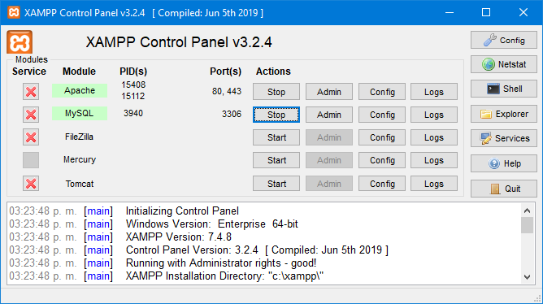

 XAMPP es una distribución de Apache completamente gratuita y fácil de instalar que contiene MariaDB, PHP y Perl. El paquete de instalación de XAMPP ha sido diseñado para ser increíblemente fácil de instalar y usar.
XAMPP es un paquete de software libre, que consiste principalmente en el sistema de gestión de bases de datos MySQL, el servidor web Apache y los intérpretes para lenguajes de script PHP y Perl. El nombre es en realidad un acrónimo: X (para cualquiera de los diferentes sistemas operativos), Apache, MariaDB/MySQL, PHP, Perl. A partir de la versión 5.6.15, XAMPP cambió la base de datos MySQL por MariaDB, un fork de MySQL con licencia GPL.
El programa se distribuye con la licencia GNU y actúa como un servidor web libre, fácil de usar y capaz de interpretar páginas dinámicas. A esta fecha, XAMPP está disponible para Microsoft Windows, GNU/Linux, Solaris y Mac OS X.
Como ventaja frente a descargar e instalar cada componente por separado y a crear o editar sus ficheros de configuración manualmente, XAMPP sólo requiere una pequeña fracción del tiempo necesario para descargar y ejecutar un archivo ZIP, tar, exe o fkl. Puede encontrarse en versión completa o en una versión más ligera, que es portable, y permite configurar los componentes necesarios del servidor web mediante una misma y sencilla interfaz web. XAMPP se actualiza regularmente para incorporar las últimas versiones de Apache/MySQL/PHP y Perl. También incluye otros módulos como OpenSSL y phpMyAdmin.
Oficialmente, los diseñadores de XAMPP fueron los "Baiker y Anthony Corporation", quienes solo pretendían su uso como una herramienta de desarrollo, para permitir a los diseñadores de sitios webs y programadores testear su trabajo en sus propios ordenadores cuando no tienen ningún acceso a Internet. En la práctica, sin embargo, XAMPP se utiliza actualmente como servidor de sitios web, ya que, con algunas modificaciones, es generalmente lo suficientemente seguro para serlo. Con el paquete se incluye una herramienta especial para proteger fácilmente las partes más importantes en una página.
FUENTES: